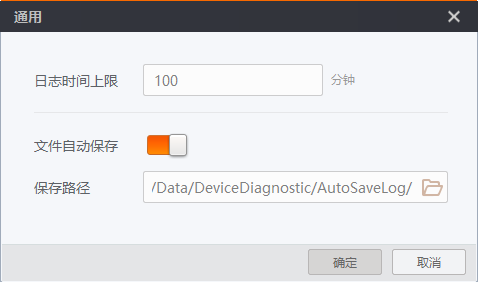
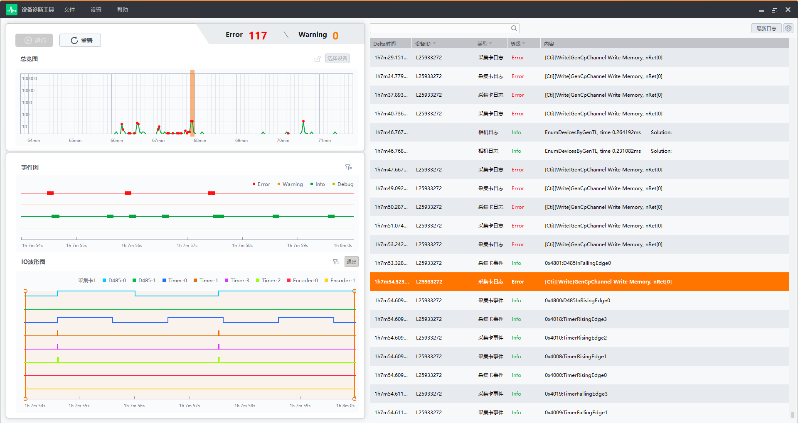
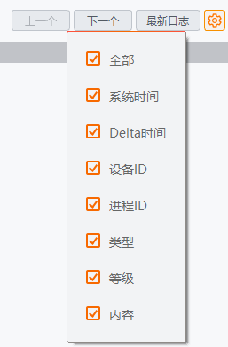

日志管理
工具对采集卡/相机事件进行检测后，可通过日志对异常信息进行排查和精准定位，有利于对异常事件的监测和解析。
日志通用设置
需先对日志的时间上限、自动保存和保存路径进行相关设置。单击菜单栏处的，如下图所示。
-
日志时间上限：在日志时间上限处设置日志最大保存时间，单位为“分钟”。超过设置时间的日志将不在界面显示。
说明日志时间上限值为100分钟。
-
文件自动保存：开启文件自动保存功能，日志文件自动保存至设置的路径，若未选择路径则保存至默认路径，默认路径为：MVS \Data\DeviceDiagnostic\AutoSaveLog。
说明开启文件自动保存功能时，不可对日志文件进行导出操作。
-
保存路径：支持自定义设置日志文件的保存路径，单击可自定义日志文件保存路径，默认为自动保存路径。

图 1 通用日志监测
通过日志监测可对采集卡/相机的日志事件进行实时监测，支持筛选和配置日志标题的显示内容，如下图所示。
日志监测可显示日志时间上限范围内的所有日志事件。为方便您对总览图和事件图的触发事件进行快速定位，单击总览图处的非正常事件，日志监测处对应的事件内容可高亮显示（选择的“6秒钟”事件仅有一个异常或警告时，才可高亮显示）；单击事件图处的任何事件，日志监测处对应的事件内容都可高亮显示。

图 2 日志查看采集卡/相机事件根据配置的标题内容进行显示，支持进行相应辅助操作，如下：
-
自定义显示标题：单击
 可自定义日志的标题显示，可手动勾选或全部勾选，如下图所示。
可自定义日志的标题显示，可手动勾选或全部勾选，如下图所示。
图 3 检索标题 -
筛选日志信息：在界面上方搜索栏处输出相应关键字，单击即可基于关键字对日志信息进行筛选，单击上一个/下一个即可查看前后的日志信息。
-
查看最新日志：单击最新日志，即可查看最新触发的日志信息。